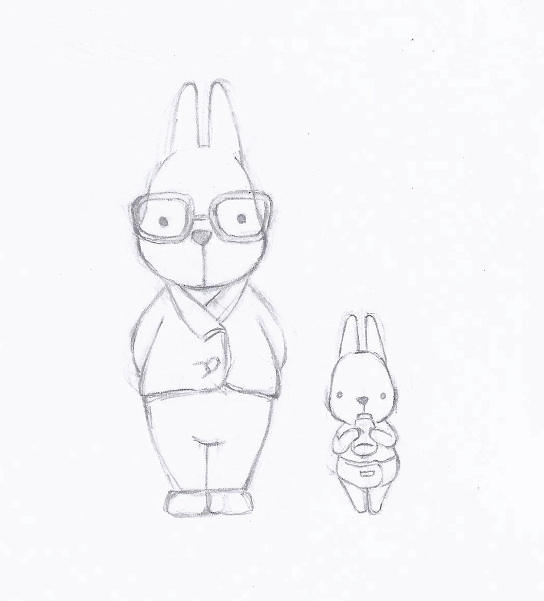
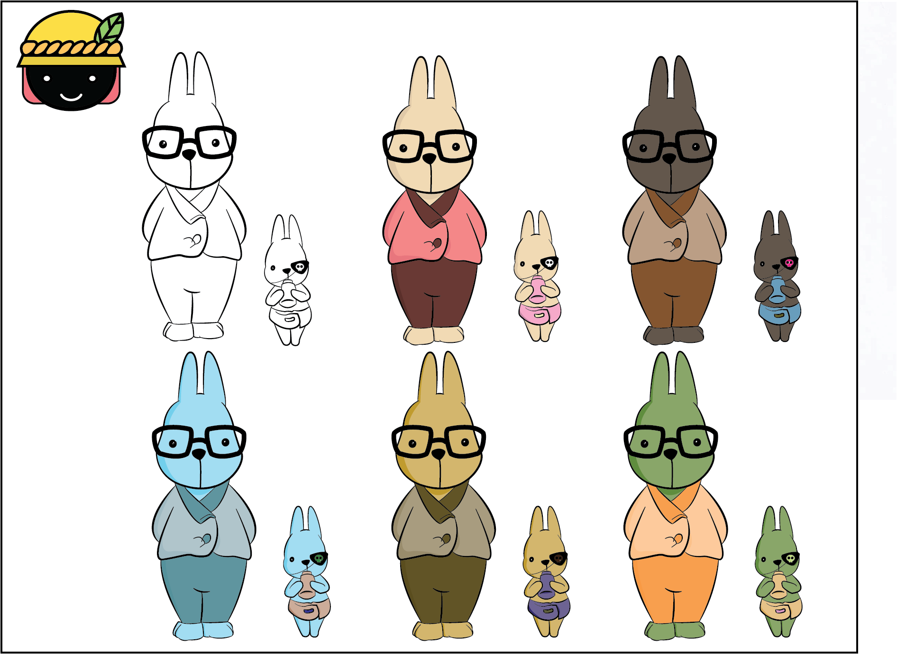

일러스트레이터로 토끼그리기
오늘은 일러스트레이터를 이용해서 토끼를 그려보겠습니다.
참고로 저는 왕초보라서 스케치사진을 구해서 밑배경을 깔아놓고 그위에 펜툴로 작업을 했답니다🤗
(작업은 일러스트레이터CS6로 했습니다.)
(작업은 일러스트레이터CS6로 했습니다.)
■ 작업과정
▶토끼 스케치 이미지 파일을 불러와서 일러스트의 레이어 맨밑으로 배치를 합니다.
이후 저희가 작업중에 실수로 눌릴 경우를 대비해 레이어를 반드시 잠금처리 해주세요.
▶펜툴을 이용해서 스케치를 따라 토끼를 그립니다!🐰
▶완성된 토끼를 어딘가에 백업해두시고... 채색을 위해 [Object]-[Expand]or[Expand Apperance]를 합니다.
이후에 [Live Paint-make]를 눌러주시고...원하시는 색을 마구마구 입혀주세요!
▶명암 작업을 위해서 다시한번 펜툴을 이용하는데요 중요한 포인트는 선색을 none으로 설정하는거에요!
▶명암스케치가 완성됐다면 다시 Expand와 LivePaint를 한 후 다시한번더 명암색에 맞게 채색해주세요!
■ 그나마 사용되었던 단축키 몇개 소개드려요...
▶레이어 잠금 : ctrl + 2
▶레이어 위/아래로 : ctrl + [ / ]
▶셀렉션 툴 : p
▶다이렉트 셀렉션 툴 : v
▶펜 툴 : a
▶패스파인더 창 : Shift + Ctrl + F9
▶라이브 컬러 : k
▶스포이드(색추출) : I 혹은 Alt + 원하는색 클릭
 